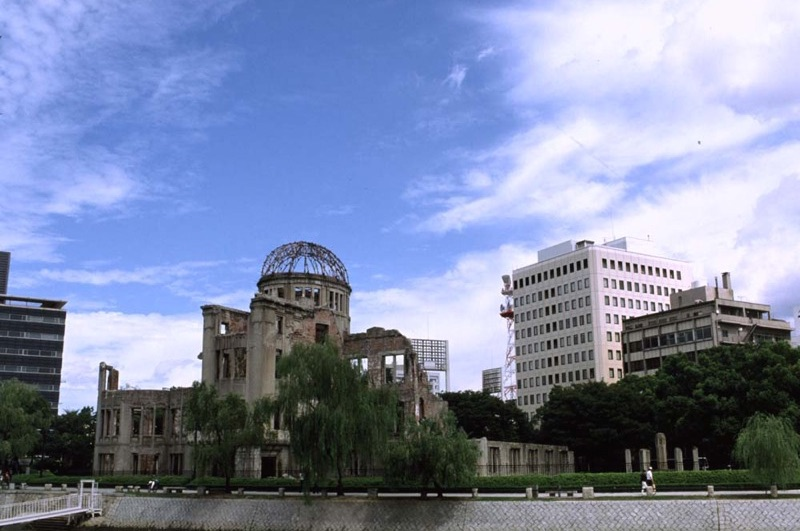

The Hiroshima Peace Memorial is a haunting tribute to the lives lost when the atomic bomb was dropped on Hiroshima on August 6, 1945. Set in a park, the memorial features Genbaku Dome, the only building left standing in the vicinity after the bomb dropped. This harsh reminder of a world at war reminds visitors of the importance of human life and honors the victims so they will never be forgotten.
2. Jigokudani Monkey Park
Jigokudani Monkey Park is a famous hot spring area near Nagano,. The name Jigokudani (meaning “Hell’s Valley”), is due to steam and boiling water that bubbles out the frozen ground, surrounded by steep cliffs and formidably cold forests. It is famous for its large population of wild Snow Monkeys that go to the valley during the winter when snow covers the park. The monkeys descend from the steep cliffs and forest to sit in the warm hot springs, and return to the security of the forests in the evenings.
3. Kiyomizu-dera
The Kiyomizu-dera Buddhist temple is located in Eastern Kyoto and can be traced back as far as the year 798. An indoor waterfall fed from the outside river keeps the temple in harmony with nature and not one nail was used in construction. While locals used to jump off the edge to have a wish granted (with a survival rate of 85.4%), modern visitors can enjoy the shrines and talismans and artwork on display without risking life and limb.
4. Himeji Castle
The Himeji Castle is considered the best existing example of Japanese castle architecture. It was fortified to defend against enemies during the feudal period, but it has been rebuilt many times throughout the centuries and reflects the different design periods. It survived the bombings of World War II and is frequently seen in domestic and foreign films, including the James Bond movie “You Only Live Twice”. The white exterior and design give the castle the appearance of a bird taking flight, earning the the castle the nickname ‘white egret castle’.
5. Great Buddha of Kamakura
The Great Buddha of Kamakura is a colossal outdoor representation of Amida Buddha, one of Japan’s most celebrated Buddhist figures. Cast in bronze, the Great Buddha stands at over 13 meters (40 feet) high and weighs nearly 93 tons. The statue reportedly dates from 1252. Although it originally was housed in a small wooden temple, the Great Buddha now stands in the open air as the original temple was washed away in a tsunami in the 15th century.
6. Todaiji Temple
The Todaiji Temple in Nara is a feat of engineering. It is not only the world’s largest wooden building, it is home to the world’s largest bronze Buddha statue. Surrounded by beautiful gardens and wildlife, the Kegon school of Buddhism is centered here and the grounds hold many artifacts of Japanese and Buddhist history. Deer are allowed to freely roam the grounds as messengers of the Shinto gods.
7. Tokyo Tower
The Tokyo Tower is a testament to the advancement of technology and modern life. Inspired by the Eiffel tower design, it is the second tallest man-made structure in Japan and functions as a communications and observation tower. Visitors can climb the tower for unparalleled views of Tokyo and the surrounding areas as well as visit shops and restaurants.
8. Tokyo Imperial Palace
The Emperor of Japan makes his home at the Tokyo Imperial Palace. It also functions as an administration center and museum to showcase Japanese art and history. The palace is set on the ruins of older castles that were destroyed by fire or war, and architects have honored the past by incorporating design elements of the different eras into the modern palace. The new palace is surrounded by traditional Japanese gardens and has many reception and function rooms to receive guests and welcome the public.
9. Mount Fuji
Mount Fuji is the highest mountain in Japan at 3,776 meters (12,388 ft). The volcano’s exceptionally symmetrical cone is a well-known symbol of Japan and it is frequently depicted in art and photographs, as well as a popular tourist attraction for sightseers and climbers. An estimated 200,000 people climb Mount Fuji every year, 30% of whom are foreigners. The ascent can take anywhere between three and eight hours while the descent can take from two to five hours.
10. Golden Pavilion
Kinkaku-ji or the Temple of the Golden Pavilion is the most popular tourist attraction in Japan and Kyoto. The pavilion was originally built as a retirement villa for Shogun Ashikaga Yoshimitsu in the late 14th century. Unfortunately, the pavilion was burnt down in 1950 by a young monk who had become obsessed with it. Five years later, the temple was rebuilt as an exact copy of the original. Emphasis is placed on the building and surrounding gardens being in harmony with one another. The pavilion is covered in gold leaf which highlights the reflection of the pavilion in the pond and the pond’s reflection on the building.